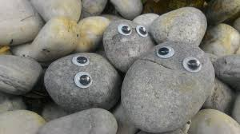

Home Page
This is Boulder Buddies, A website that sells pet rocks!
Pet rocks are a very common pet for kids to have or for adults who want a low effort pet to have around their homes.
Best types of rocks
The best kinds of rocks to have as pets depends on the type of person.
Some of the most popular pets are...
- Geodes
- Smooth rocks
- Mulicolored rocks
- Sharp rocks
- Moon rocks